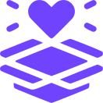

Guia
Guia do Voluntário
Dúvida?
Nosso guia te ajuda
Ler

Fechar
Manual do Voluntario
- Você nos ajuda a ajudar - Verificando se a categoria foi marcada de maneira correta, caso não, edite para a categoria correta, assim a chance da pessoa que pede ser vista é maior
- Se verificar a ocorrência de palavras ofensivas nas descrições do pedido ou mensagens que não sejam pedidos de ajuda, você pode deletar (excluir)
- Os eventos ficaram disponíveis e visiveis para todos
- Na app você pode criar conexões com pessoas que estão organizando eventos beneficentes.
- Caso não possa mais ser um voluntário nos encaminhe um e-mail.
- Indique o app para pessoas próximas, ajude-nos a ajudar!